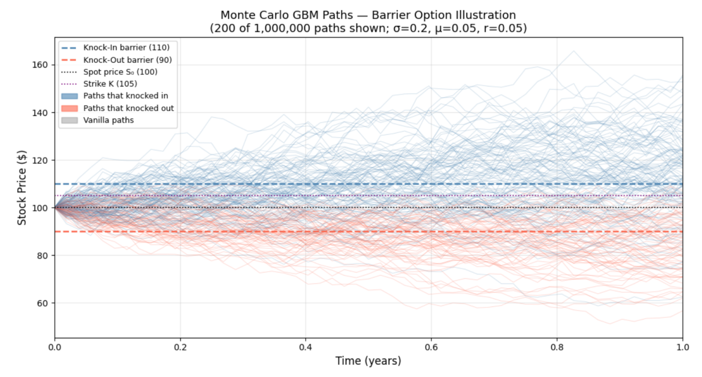

Option Pricing with Monte Carlo Simulation

Overview
Priced European and barrier options in Python by simulating one million stock price paths under Geometric Brownian Motion, and checked the simulation against the closed-form Black-Scholes model. Barrier options only pay off depending on whether the price crosses a set level during the option's life, so they have no simple formula and need path-by-path simulation.
What I did
- Implemented four pricers: closed-form Black-Scholes, Monte Carlo for European options, and Monte Carlo for up-and-in and down-and-out barrier options.
- Chose 1,000,000 paths to keep the standard error near $0.02, and 52 weekly time steps so the simulation catches barrier crossings that a single step would miss.
- Validated the simulation: all three European methods agreed within about $0.02 (Black-Scholes call $8.02, Monte Carlo $8.01).
- Explained how barrier placement shapes prices. The down-and-out barrier removes the paths that make a put valuable, dropping its price from $7.90 to $0.69.
- Tested sensitivity to ±10% volatility, finding that knock-out puts lose value as volatility rises, the opposite of a standard option.
- Estimated the option's Delta with Monte Carlo finite differences (0.5420), within 0.0002 of the analytical value (0.5422).
Results
- Time steps matter for barriers. With one step, the knock-in put priced at $0.00; with 52 steps it priced at $1.74, capturing paths that rise above 110 and then fall back below the $105 strike.
- Matching Black-Scholes to the cent takes about 10–16 million paths, or roughly half that with antithetic variates for variance reduction.
- Choosing the finite-difference step is a trade-off: too small amplifies simulation noise and too large adds bias. A step of 1 balanced the two.
Tools
Python, NumPy, Matplotlib, Monte Carlo simulation, Black-Scholes model